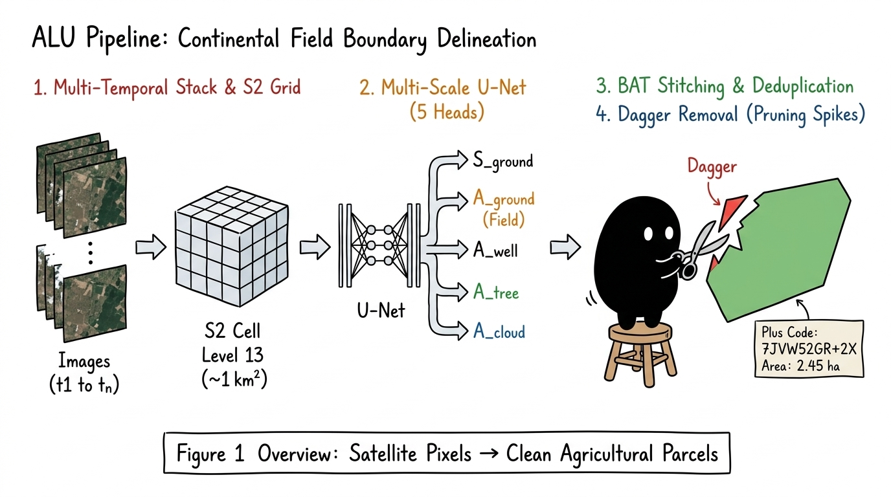

1 Multi-Temporal Stacking & S2 Spatial Sharding
Fig 1(a-b)S2 Cell Level 13 Partitioning (~1 km²)
Decomposing the continent into 1 MB independent processing payloads
✅ With Buffer: Farm parcel straddling the border between S2#107 and S2#108 is fully captured and stitched by BAT, eliminating cut-off parcels.
Step 1 of 5
Step 1: Multi-Temporal Stacking & S2 Grids
Phase: IngestionSmallholder agricultural landscapes present two fundamental hurdles: small parcel sizes (< 2 hectares) and frequent cloud cover during monsoon farming seasons (Kharif).
Key Mechanisms:
- Multi-temporal Stack: Combines passes across vegetative peaks (monsoon lush) and harvest periods (soil boundaries).
- Cloud Shadow Removal: Pixel-level masking ensures clear composite coverage across the subcontinent.
- S2 Level 13 Sharding: Decomposes continental rasters into manageable ~1 km² spherical buckets (~1 MB payload each).
- +150m Margin Buffer: Guarantees boundary farms crossing tile lines are processed without clipping.
🎨 Original Illustration Style

🔍 Click to View Full Illustration
Features Xiaohei on a stool clipping dagger spikes, highlighting the 4 core steps: Multi-temporal stack, 5-head U-Net, BAT stitching, and dagger removal.
🎙️ 3B1B Narration Script
32s Synchronized
[00:00] "To delineate 100 million smallholder farms, we stack multi-temporal satellite passes, combining seasonal crops while removing clouds."
[00:08] "We partition into Level 13 S2 cells, using a 150-meter buffer to preserve boundary farms."
[00:15] "A multi-scale U-Net with five heads predicts ground semantics and pixel affinities for fields, wells, and trees."
[00:22] "BAT deduplication stitches overlapping tiles, while dagger removal prunes sharp neural spike artifacts."
[00:28] "Delivering clean cadastral parcels via S2 APIs."